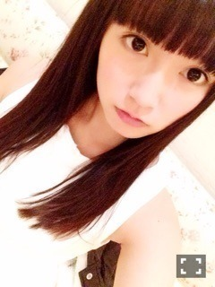
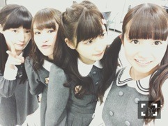
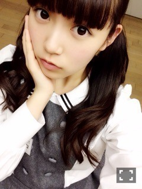
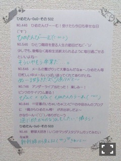
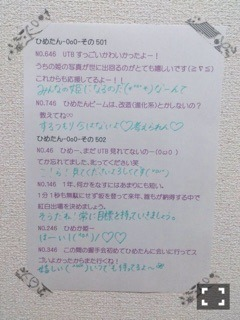

| 2015/03 05 Thu | ひめたん-OoO-その525 |
あすかりんらぶー♡
最近あすかりんとふたりで
お出かけしましたー（ ˆoˆ ）
いろんなお話もできて
充実した1日でした
またいこーうね♡
ビジネース！

ペアPV予告編
公開されました！
秋元真夏＆中元日芽香
タイトル：「スイッチ」
監督：中川英明・水落豊・尾形直哉
私たちにしては珍しく(笑)
シリアスな感じで
お届けしております今作。
服も髪型もセリフも全部交換して
ヒロインと悪役を両方演じるという
ちょっと不思議な映像\( ˆoˆ )/
この役を真夏が演じたら、
日芽香が演じたらどうなるのか？
みなさんにもぜひ
この不思議な感じを
体験していただきたいです！
ちなみに
youtubeオフィシャルページの
紹介文にもあった通り
悪役、楽しかったです(笑)
ただ何だろうあの2人の
悪役やってる時の違和感は......。


それから、ひとつ告知！
4/9発売のUTB+さん
撮影していただきました⊂( ˆoˆ )⊃
さゆとふたりです♡♡
さゆとペアはじめてかな？
よろしくお願いします～

んおー見られてる見られてる
そうだ！じゃあ今日は久々に
ひめたんからみなさんに
質問する日にしようかな( ˇωˇ )
ちょっと久々かも！
よかったら答えてね～
1
 ひめたんのこと好き？♡
ひめたんのこと好き？♡
ひめたんのこと好き？♡
2
3月といえば？花粉？花粉かな？
3月といえば？花粉？花粉かな？
3
好きな
四字熟語教えて！
好きな
四字熟語教えて！
最後の質問なんだけど
何か、最近、いろんな言葉覚えたくて。
だからみなさんからの
コメント読みながら
ちょっと賢くなるね\( ˆoˆ )/

んーねむそうな顔。

最近部屋に
ハエトリグモがよく現れます。
目が大きくてすごいかわいいです。
何か名前を付けたいです。
いい名前を付けてあげてください。
お願いします。
くも太郎（＾ω＾）
実家に住んでる時、クモさんが現れる度
勝手にそう呼んでたので
みなさんにもお譲りします＊
バースデーライブでの
裏話的なのがあったら聞きたいです
めーるでは話したことなんだけど
寧々と少し話す時間があって
元気貰いました( ˇωˇ )
お仕事落ち着いたらごはん行きたい。
もうすぐ3月3日ということで質問！
ひめたんが毎年欠かさずやってる
ひな祭り的なイベントってある？
ひな祭りか～
小さい頃は雛人形飾ったりしたなあ
さくら餅食べたい。
ひめたんってダンス歴何年？
一応13年目になるのかな？
小1の頃からやってるからね～
その割には身体も堅いし
そんな上手でもないけど(´・ω・｀)
でも踊ることは好きだよ！
11thアンダー曲もう馴染んで
好きになっちゃった♪
と、ところでひめたんが歌ってる
パートを詳しく知りたいな
ありがとう♡
発売したらいつもみたいに
めーるでこっそり教えるね(´｡･v･｡｀)
それまでは予想しながら待ってて♡
ひめたんは何年生の時が
1番楽しかったですか⁇
乃木坂入る前の中2とかが
楽しかった......のかな
高校生になってからはどうしても
活動と勉強を平行しながらで
学校を楽しめる余裕なかったかも。
ひめたんの日記の
コメント欄下２ケタに46を踏んだ方へ
手書きでコメ返するコーナー
＼ ひめたん46 ／



いつもたくさんのコメント
ありがとうございます
アンダーライブ先行抽選の結果が
出たのかな？出たんだよね
報告ありがとうね（＾ω＾）
当選したひと待ってるよ！
落選しちゃったよ～てひとも
一般があるから大丈夫♡
今の私には楽しみだけじゃなくて
不安とか、いろんな考え事もあるけど
とにかく熱いライブにしたい！
あ、高校の卒業式あったみたいで
卒業生のみなさんおめでとう♡
地元の広島ももう卒業式あったんよね
みんな元気にしてるかなー？
連絡なくて寂しい(´；ω；`)
まあでも忙しい時期なんだよね
私も頑張ろう！
(＊´・ω・＊)
コメント(1462)
2015/03/05 00:12